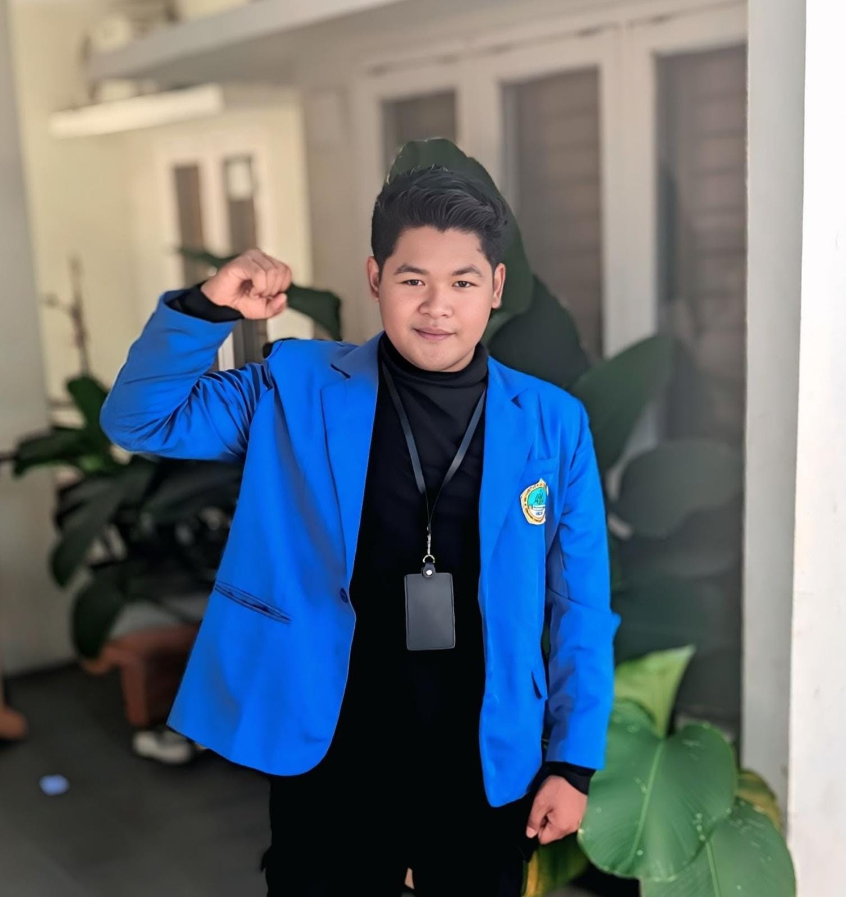

Halo, Saya
Memiliki minat besar dalam mengembangkan karir sebagai Supervisor Sales/Distribusi dengan bekal kepemimpinan tim, manajemen operasional, dan kedisiplinan tinggi di lapangan.

Status
Siap Bekerja
Mahasiswa Ekonomi Syariah tingkat akhir di Universitas Islam Zainul Hasan Genggong dengan pengalaman lapangan sebagai asisten supervisor selama magang, terbiasa mengawasi tim, memantau target operasional harian, dan menyelesaikan masalah langsung di lapangan.
Memiliki pemahaman dasar pembukuan dan arus kas dari perkuliahan Akuntansi serta praktik langsung. Terampil menggunakan Microsoft Office dan analisis data, didukung kemampuan tambahan di bidang fotografi dan videografi. Berminat mengembangkan karir sebagai Supervisor Sales/Distribusi dengan bekal kepemimpinan tim dan disiplin lapangan.
(Shift Bergilir / Program Magang)
S1 Ekonomi Syariah
"Integrasi Nilai Tasawuf dan Experiential Marketing sebagai Keunggulan Persaingan Jasa Travel Umroh (Studi Kualitatif pada PT Mahamada)"
Kombinasi kemampuan teknis dan interpersonal yang mendukung kinerja profesional.